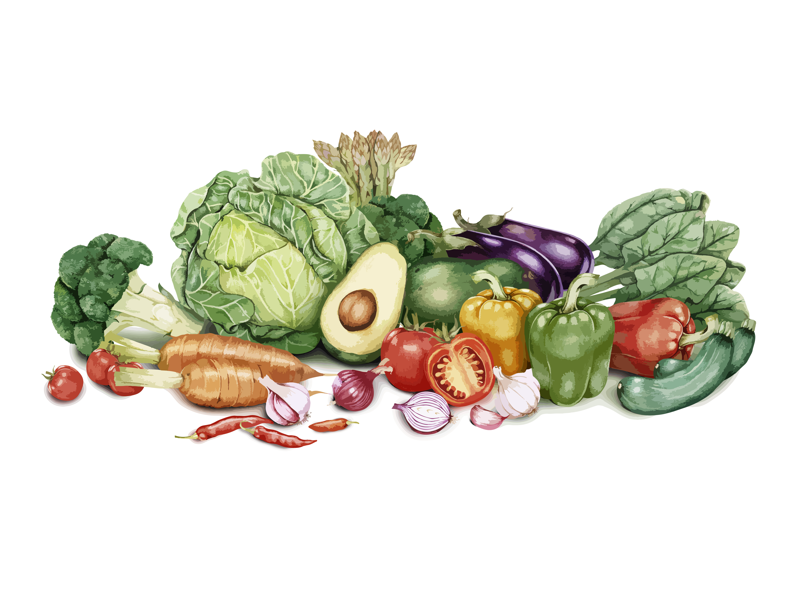
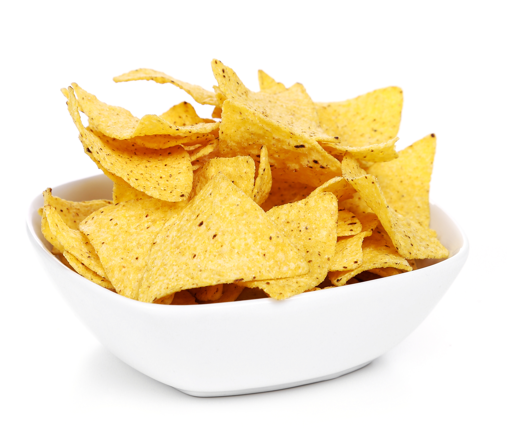

Quick Cowboy Caviar!
Vegan, Gluten Free, and Delicious!
Serves 12
In a pinch?
Need something quick and delicious?
In 20 minutes, you can make a simple, healthy appetizer that's sure to be a hit!
Ingredients for Dressing
- 1/2 cup of olive oil
- 1/8 cup of stevia, or to taste
- 1/4 cup of white wine vinegar
- 1 teaspoon of chili powder
- 1 teaspoon of salt
Ingredients for Caviar
- 1pound Roma tomatoes, seeded and diced
- 1 (15 ounce) can of black-eyed peas, drained and rinsed
- 1 (15 ounce) can of black beans, drained and rinsed
- 1 (11 ounce) can of sweet corn, drained
- 1 red onion, diced
- 1/2 cup of diced green bell pepper
- 1/2 cup of diced red bell pepper
- 2 ripe avocados, diced
- 1 cup of chopped cilantro
Chop!
Chop all vegetables (be sure to rinse them off!)

Whisk!
In a large bowl, whisk together the olive oil, stevia, white wine vinegar, chili powder, and salt
Mix Everything!
Add tomatoes, avocado, black-eyed peas, beans, corn, onion, and bell peppers
Stir to combine
Stir in cilantro. Cover and chill until served
Serve and enjoy!
Serve as a dip, as a salad topping, or as a side-dish!

Food photo created by freepik Food vector created by freepik